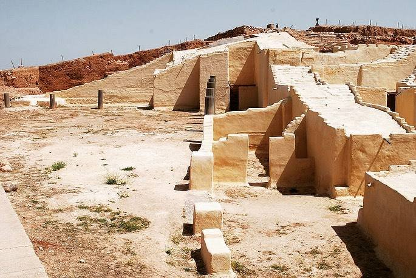

Kültürel Mirasımız
İdlib'in Tarihe Armağanı: Ebla Antik Kenti (Tell Mardikh)
Ebla'nın Tarihteki Yeri
Ebla Antik Kenti, Suriye'nin İdlib kentinin yaklaşık 55 km güneybatısında yer alan, antik dünyanın en önemli ve en güçlü krallıklarından biridir. Milattan önce 3000'li yıllara dayanan tarihiyle bölgedeki ticareti, kültürü ve siyaseti yönlendirmiştir.
"Ebla tabletlerinin keşfi, Antik Yakın Doğu tarihinin baştan yazılmasına sebep olmuş; İdlib'in insanlık tarihindeki kilit rolünü kanıtlamıştır."

Hızlı Bilgiler (Tablo)
| Özellik | Açıklama |
|---|---|
| Konum | İdlib, Suriye (Tell Mardikh) |
| Kuruluş | M.Ö. 3000 civarı |
| Keşif Yılı | 1964 (İtalyan Arkeologlar) |
| Önemi | 15.000'den fazla çivi yazılı tablet bulunmuştur. |
Neden Çok Önemli?
- 1. İlk Sözlükler: Ebla tabletleri, tarihteki bilinen en eski iki dilli (Sümerce ve Eblaca) sözlükleri içerir.
- 2. Ticaret Merkezi: Mezopotamya ve Mısır arasında çok önemli bir ticaret köprüsü görevi görmüştür.
- 3. Gelişmiş Şehircilik: Düzenli sokakları, devasa sarayları ve surlarıyla dönemin en modern şehirlerinden biridir.
- 4. Kültürel Etki: İdlib topraklarının binlerce yıl boyunca medeniyetlere nasıl beşiklik ettiğinin en canlı kanıtıdır.